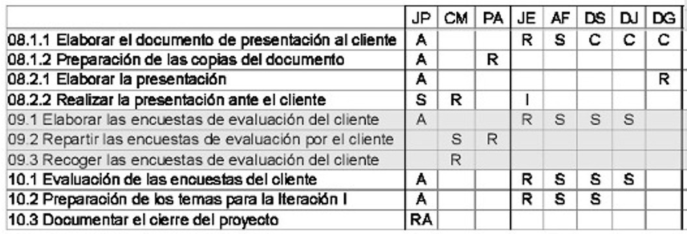

Curso de Gestión de Proyectos para ONG
Necesidades de Gestión de Proyectos en ONG:
- Alta influencia de factores externos
- Gestionar el cambio
- Gestionar requisitos cambiantes
- Patrones de financiación cambiantes
- Desarrollo frente a Caridad
- Limitaciones presupuestarias
- Gestión de equipos
- Liderazgo de Voluntarios
¿Es el Control y Evaluación diferente de la Gestión de Proyectos?

Empecemos con unas definiciones:
- Proyecto
- Gestión de proyectos
- Programa
- Portafolio
- Gestor de proyectos
- Interesados
Proyecto
Un esfuerzo temporal para crear un producto único, un servicio o un resultado.
Tiene un principio y un final
Es único
Consume recursos
Gestión de proyectos
Aplicación de conocimientos, habilidades, herramientas y técnicas a las actividades del proyecto para alcanzar los requisitos establecidos.
… se consigue a través de 5 grupos de procesos: Inicio, Planificación, Ejecución, Supervisión y Control y Cierre
Programa
Un grupo de proyectos relacionados y gestionados de manera coordinada para obtener un beneficio y un control que no se podría obtener gestionándolos de manera individual.
Portafolio
Grupo de proyectos y/o programas y de otros trabajos que se agrupan para facilitar su efectiva gestión de cara a conseguir unos objetivos estratégicos.
Relación entre Proyecto, Programa y Portafolio:

El Director de Proyectos:
No es miembro del Consejo de Gobierno o Junta de Proyecto
- Responsable:
- ante la Junta del Proyecto…
- de la compleción del proyecto…
- de acuerdo al plan establecido
- Realiza las actividades:
- Planificar
- Organizar recursos y repartir tareas
- Medir e informar del progreso
Interesados del Proyecto
Aquellas personas que o bien están afectadas por los resultados del proyecto o bien pueden afectar a los resultados del proyecto.
También llamados Actores Interesados
ONG, Equipo del proyecto, Beneficiarios del proyecto, Industria, Comunidad, Empleados, Financiadores públicos, Patrocinadores, Voluntarios, Gobierno, Grupos de interés, etc.
No, no son sólo los destinatarios
Interesados del Proyecto
Caso de estudio
Embarazo adolescente en Bolivia
Los países del área andina son los únicos a nivel mundial en el que el embarazo adolescente ha aumentado en los últimos 30 años.
La prevención del embarazo adolescente es una prioridad de las políticas públicas para los países del área andina.
En el caso de Bolivia el índice de embarazo adolescente es el más alto de la región con un 21% de las adolescentes. Especialmente en el Departamento del Beni, con un 22% de embarazo adolescente.
Ciclo de Vida de un proyecto
Fases por las que pasa un proyecto desde su inicio hasta su cierre
- Dependen de la organización y del tipo de proyecto
- Existe un cierre/apertura entre fases:
- Check Point
- Exit Gate
Tipos de Ciclo de Vida
Predictivo
Iterativo
Adaptativo
Grupos de procesos
El Ciclo de Vida de todos los Proyectos pasa por cinco Grupos de Procesos: Inicio, Planificación, Ejecución, Supervisión y Control y Cierre
No confundir Grupos de Procesos con Fases del Ciclo de Vida
Los cinco Grupos de Procesos son:

Relación entre los Grupos de Procesos

Importancia de los Grupos de Procesos
Debemos entender cuáles son los cinco Grupos de Procesos por los que pasan TODOS los proyectos
¿Por qué pasar por TODOS los grupos de procesos?
Imagen obtenida de OpenClipArtLos Procesos también están agrupados por Áreas de Conocimiento:
Grupos de procesos y Áreas de conocimiento
¿Qué es un proceso?
Conjunto de acciones y actividades interrelacionadas realizadas para obtener un producto, resultado o servicio predefinido

Grupo de Procesos de Inicio

4.1. Desarrollar el Acta de Constitución:
- Formalmente autoriza un proyecto o una fase de proyecto
- El desarrollo del Acta de Constitución es parte del Área de Conocimiento de Integración
- El Director de Proyectos debe ser identificado y asignado tan pronto como el Proyecto sea viable - Preferentemente antes o mientras el Acta aún está en desarrollo
- Los Proyectos pueden ser Constituidos y Autorizados externamente a la Organización p.e.: agencias del gobierno, requerimientos legales, desarrollos tecnológicos, necesidades de negocio…
Contenidos del Acta de Constitución:
- Propósito
- Actores principales
- Requisitos básicos y Objetivos
- Restricciones y Supuestos
- Riesgos
- Estructura de Desglose del Trabajo de Alto Nivel
- Estimaciones de Coste
- …
Autorización por escrito
13.1. Identificar a los Interesados:
- Crear un registro de personas y grupos con capacidad de impacto o afectados por el proyecto
- La identificación de los Interesados es parte del Área de Conocimiento de Gestión de los Interesados
- Los Interesados del Proyecto son aquellos que están involucrados activamente en el mismo y aquellos cuyos intereses se van a ver afectados por los resultados, ejecución y finalización del mismo
13.1. Identificar a los Interesados:
- El Director de Proyectos debe administrar la influencia de los mismos con respecto a los requisitos para asegurar el éxito del proyecto
- Los Interesados pueden tener una influencia positiva o negativa en el Proyecto
- Los Interesados con influencia negativa suelen ser subestimados por el equipo del proyecto por lo que aumenta el riesgo de que el Proyecto no acabe con éxito
Grupo de Procesos de Planificación

Definición
La Planificación, en el contexto de la Gestión de Proyectos, implica la documentación de las acciones necesarias para definir, preparar, integrar y coordinar todos los planes subsidiarios en un Plan de Gestión de Proyecto
Se pueden tener que elaborar hasta 14 planes subsidiarios
Gestión de la Integración del Proyecto
- Desarrollar el Plan de Gestión del Proyecto [4.2.]
- Documento detallado y bien estructurado que define el estilo del Proyecto en sí mismo
- Asegura la Integración a lo largo del proyecto
- Controla el cambio de manera efectiva
- Puede actualizarse en actividades de planificación iterativas
Gestión del Alcance del Proyecto:
- Durante la planificación, el Alcance se define y describe de manera minuciosa ya que se tiene más información sobre el propio Proyecto
- Planificar la Gestión del Alcance [5.1.]
- Recolección de Requisitos [5.2.]
- Definición del Alcance [5.3.]
- Creación de la Estructura de Desglose del Trabajo (EDT) [5.4.]
EDT:
- Identificar Entregables y Trabajo necesario para obtenerlos
- Descomponer niveles superiores en componentes de menor nivel
- Verificar descomposición es necesaria y suficiente
Resultados de la planificación del Alcance
- Plan de gestión del alcance
- Plan de gestión de requisitos
- Documentación de requisitos
- Línea Base del Alcance
- Enunciado del Alcance
- EDT
- Diccionario de la EDT
Gestión del Tiempo del Proyecto
- Planificar la Gestión del Tiempo [6.1.]
- Definir las actividades [6.2.]
- Secuenciar las actividades [6.3.]
- Estimar los recursos de las actividades [6.4.]
- Estimar la duración de las actividades [6.5.]
- Desarrollar el Cronograma [6.6.]
Secuenciar las actividades [6.3.]
- De final a principio
- De final a final
- De principio a principio
- De principio a final
Desarrollar el Cronograma [6.6.]

Actividades divergentes: única predecesora con múltiples sucesoras
Actividades convergentes: múltiples predecesoras con una única sucesora
Resultados de la planificación del Tiempo
- Plan de gestión del Cronograma
- Línea Base del tiempo
- Datos del Cronograma
Gestión del Coste del Proyecto
- Planificar la Gestión de Costes [7.1.]
- Estimar Costes [7.2.]
- Variables
- Fijos
- Directos
- Indirectos
- Determinar el Presupuesto [7.3.]
Esquema del presupuesto

Resultados de la Planificación de Costes
- Plan de gestión del coste
- Línea Base del coste
- Requisitos de financiación del Proyecto
Gestión de la Calidad del Proyecto
- Planificar la Gestión de la Calidad [8.1.]:
- Evitar el «Chapado en Oro»
- Grado (Funcionalidad) y Calidad no son lo mismo
- La Calidad es:
- Completar un Requisito
- Satisfacer al Cliente
- Pueden haber distintos niveles de Calidad
Resultados de la Planificación de Calidad
- Plan de gestión de la calidad
- Plan de mejora de procesos
- Métricas de calidad
- Listas de chequeo de la calidad
Gestión de Recursos Humanos del Proyecto
- Planificar la Gestión de Recursos Humanos [9.1.]:
- Identificar perfiles, roles, responsabilidades, competencias, etc
- Identificar las restricciones del Proyecto:
- Estructura de la organización
- Acuerdos de negociación colectiva
- Contratación de personal
- Normativa vigente
- Identificar necesidades de formación, recompensas, etc
Resultados de la planificación de Recursos Humanos
- Plan de gestión de recurso humanos
- Roles y Responsabilidades
- Organigramas del Proyecto
- Plan de gestión del personal
- Matrices de Asignación de Responsabilidades (RAM)
Gestión de las Comunicaciones del Proyecto
- Planificar la Gestión de las Comunicaciones [10.1.]
- El Gestor de Proyectos debe gastar gran parte de su tiempo comunicándose
- Hay que entender qué debe ser comunicado, a quién y con qué frecuencia
El Plan de Comunicación depende de:
- Requisitos de información de los interesados
- Listado de emisores / listado de receptores
- Tecnologías de comunicación
- Modelo de comunicación
- Emisor / Receptor / Mensaje / Ruido
- Pautas de comunicación
- Método de comunicación
- Push / Pull / Interactivo
Resultados de la planificación de las Comunicaciones
- Plan de gestión de las comunicaciones
- Requisitos de información
- Paquetes de información y frecuencia
- Recursos, métodos y canales
- Diagramas de flujo de información
- Matriz de distribución de información
- Restricciones de comunicación
Gestión de los Riesgos
- Planificar la gestión de Riesgos [11.1.]
- Identificar los Riesgos [11.2.]
- Realizar el Análisis Cualitativo de los Riesgos [11.3.]
- Realizar el Análisis Cuantitativo de los Riesgos [11.4.]
Planificar la gestión de Riesgos [11.1.]
- Se emplean
- Enunciado del alcance
- Planes de Costes / Tiempo y Comunicaciones
- Registro de interesados
- Se genera el Plan de Gestión de Riesgos
- Metodología a emplear y acciones
- Roles y responsabilidades
- Presupuestos y reservas
- Mediciones y tolerancias
Todos los miembros de un Proyecto deberían colaborar en la identificación de Riesgos
Identificar los Riesgos [11.2.]:
El resultado es el Registro de Riesgos
- Herramientas para la identificación de Riesgos:
- Lluvia de ideas
- Técnica Delphi
- Entrevistas
- Análisis DAFO
Registro de Riesgos
- Lista de riesgos identificados
- Causas comunes de riesgos
- Disparadores de riesgos
- Lista de posibles respuestas
Realizar el Análisis Cualitativo de los Riesgos [11.3.]
- Establecer Prioridades entre Objetivos
- ¡Los Riesgos positivos son Oportunidades!
- Calcular Probabilidad e Impacto: Severidad
Realizar el Análisis Cuantitativo de los Riesgos
El Análisis Cuantitativo se realiza SOLO en los Riesgos que se hayan priorizado en el Análisis Cuantitativo por potencialmente ser de impacto para el Proyecto
- Las herramientas pueden ser:
- Análisis de Sensibilidad
- Modelos y simulaciones (Monte Carlo)
- Evaluación del Valor Monetario Esperado
- Árboles de decisión
Resultados de la planificación de los Riesgos
- Plan de gestión de Riesgos
- Registro de riesgos
Gestión de las Adquisiciones del Proyecto
- Planificar las Adquisiciones [12.1.]
- La decisión es si hay que «hacer o comprar»
- Se alcanza por juicio de expertos, investigaciones de mercado, reuniones…
- Revisar el riesgo inherente a cada decisión
- Revisar cada tipo de contrato para mitigar riesgos
Resultados de la planificación de las Adquisiciones
- Plan de gestión de las adquisiciones
- Enunciado de las adquisiciones
- Descripción del producto
- Parámetros de entrega
- Documentos de las adquisiciones
- Criterios de selección
Gestión de los Interesados
- Planificar la Gestión de los Interesados [13.2.]
- Identificar niveles de compromiso y participación
- Interrelaciones y conflictos
- Requisitos de comunicación
- Información a distribuir a cada interesado
Resultado de la planificación de la gestión de los Interesados
- Plan de gestión de los interesados
Grupo de Procesos de Planificación
Un último consejo:
No hay ningún sustituto a la documentación Siempre hay que documentar
Grupo de Procesos de Ejecución
Grupos de Procesos de Ejecución:
El Grupo de Procesos de Ejecución consiste en los Procesos que se realizan para completar el trabajo definido en el Plan de Gestión del Proyecto para satisfacer las especificaciones del Proyecto
Antes de ponerse a ejecutar
- Estructura de Desglose del Trabajo
- Línea Base del Tiempo
- Línea Base del Coste
- Plan de Gestión de la Calidad
- Plan de Gestión de Recursos Humanos
- Plan de Gestión de Comunicaciones
- Riesgos Identificados
- Plan de Gestión de Adquisiciones
Recursos Humanos
Entradas
- Plan de gestión de recurso humanos
- Roles y Responsabilidades
- Organigramas del Proyecto
- Plan de gestión del personal
- Matrices RAM
Matriz RASCI

|
|
Adquiriendo el equipo [9.2.]
- Recursos:
- Asignaciones previas
- Relaciones previas con el proyecto
- Negociación
- Con otras organizaciones, equipos, etc
- Adquisición
- Contrataciones o subcontrataciones
- Equipos virtuales
- A través de comunicaciones digitales
- Requiere gran planificación de comunicaciones
- Análisis multicriterio
- Permite tomar decisiones de forma más adecuada
Adquiriendo el equipo
- Los equipos pueden no resultar como se planifican:
- Afectan los Riesgos, el Cronograma, el Coste, las Comunicaciones, todo se debe tener en cuenta
- Además también hay que tener en cuenta otras opciones: legales, regulaciones, obligaciones que deben vigilarse
Desarrollando el equipo [9.3.]
- Objetivos del Desarrollo del Equipo:
- Alinear esfuerzos
- Facilitar el trabajo a los demás
- Efecto Medici
- Conseguir lealtad al proyecto
- Generar y aumentar confianza
Desarrollando el equipo
- Recursos:
- Habilidades interpersonales
- Formación
- Team Building
- Reglas básicas
- Re ubicación
- Reconocimientos y recompensas
- Valoración del personal
Desarrollando el equipo
Liderazgo situacional

Dirigir el Equipo del Proyecto [9.4.]
- Recursos:
- Observación y Conversación
- Evaluaciones de rendimiento
- Habilidades interpersonales
- Gestión de conflictos
Dirigir el Equipo del Proyecto
- Gestión de conflictos:
- Inevitables entre personas
- Pueden ser beneficiosos
- Resultado del Cambio
- Pueden y deben manejarse
Gestión de conflictos

Thomas Kilman
¡Cuidado con el efecto Halo!
Se produce cuando la calidad de una persona influencia una decisión
Por ejemplo:
El señor A es una persona con grandes capacidades tecnológicas, por lo que será un buen gestor de proyectos tecnológicos
Solo con estos datos no podríamos afirmar que las habilidades tecnológicas del señor A le vayan a convertir automáticamente en un buen Gestor de Proyectos
¡No hay que dejarse cegar por el Halo!
Comunicaciones
Entradas
- Registro de Interesados
- Plan de Gestión de Interesados
- Requisitos de Comunicación
- Información, formato, lenguaje, frecuencia, niveles
- Miembros del equipo
- Generar / comunicar información
- Tecnología
- Escalado de información
- Calendario de reuniones
Gestión de las Comunicaciones del Proyecto [10.2.]
- Sistema de Gestión de la Información
- Gestión de documentos impresos
- Cartas, notas, actas, informes, prensa
- Gestión de comunicaciones electrónicas
- Correo, webs, actas, informes
- Herramientas electrónicas de gestión
- Oficinas virtuales, videoconferencias, sistemas de trabajo colaborativo, gestión de proyectos
Mejorar la eficiencia de las reuniones
He convocado esta reunión y no será una reunión hasta que alguien no desperdicie tiempo
The Boss - Dilbert
Mejorar la eficiencia de las reuniones
- Convocatoria formal y con suficiente antelación
- Propósito y tiempo limitado
- Orden del día y Agenda para cada punto
- Reuniones regulares
- Elección de personas adecuadas
- Informar del papel y la responsabilidad
- Moderador y reglas de Comportamiento
- Secretario que redacta el acta
- Título, fecha y asistentes
- Acuerdos adoptados
- Compromisos con fecha y responsable
Interesados
Entradas
- Plan de gestión de los Interesados
- Plan de gestión de las Comunicaciones
Gestionar el Compromiso de los Interesados [13.3.]
- Gestionar de manera activa las expectativas, influenciar los deseos para que se alineen con los objetivos del proyecto
- Tratar los puntos que no se conviertan en Incidencias
- Clarificar y resolver Incidencias
- Registro de Asuntos Pendientes
Calidad
Entradas
- Plan de Gestión de la Calidad
- Métricas de Calidad
- Mediciones de control de Calidad
Aseguramiento de la Calidad [8.2.]
- Las auditorías de Calidad son revisiones estructuradas con objetivos tales como:
- Identificar las mejores prácticas
- Identificar carencias
- Obtener mejores prácticas de proyectos similares conocidos
- Ofrecer ayuda a la mejora
- Asegurarse de que la auditoría contribuye constructivamente
- Lecciones aprendidas
Adquisiciones
Entradas
- Documentos de las Adquisiciones
- Criterios de selección de proveedores
- Lista de proveedores cualificados
- Acuerdos
Efectuar las adquisiciones [12.2.]
- Hacer las solicitudes de información a los proveedores cualificados
- Evaluar las respuestas
- Referirse a las estimaciones de expertos
- Negociar
- Concesión del contrato
Conclusión
- Este Grupo de Procesos implica coordinar gente y recursos, así como integrar y llevar a cabo las actividades descritas en el Plan de Gestión del Proyecto
- Los resultados pueden requerir realizar nuevas planificaciones y crear nuevas Líneas Base
- Gran parte del Presupuesto del Proyecto se emplea en esta fase
Grupo de Procesos de Seguimiento y Control
Grupo de Procesos de Seguimiento y Control
- Qué
- Revisar y analizar el Rendimiento del Proyecto
- Informar del Rendimiento del Proyecto
- Por qué
- Informar del Rendimiento del Proyecto
- Controlar la Triple Restricción
Triple Restricción
¿Quíntuple Restricción?
Revisar y analizar el Rendimiento del Proyecto
- Informes creados por los Miembros del Equipo al Gestor de Proyecto
- Análisis de Variación
- Estado de Valor Ganado
- Auditoría de Riesgos
Análisis de la Variación
- Informes
- Informe de variación del Cronograma
- Informe de variación del Coste
- Informe de variación de la Calidad
- Elementos comunes a los 3 informes
- Resultados planificados
- Resultados reales
- Variación
- Causas Raíz
- Respuestas planificadas
Auditoría de Riesgos
- Auditoría de Eventos de riesgo
- Auditoría de Respuesta a Riesgos
- Proceso de Gestión de Riesgos
Informar de Rendimiento del Proyecto
- El informe se envía al Gestor del Proyecto o al esponsor
- Los datos se obtienen de los informes de estado del Equipo del Proyecto.
- Solo debe aparecer información de alto nivel
- El informe contendrá
- Lista de objetivos alcanzados a fecha del informe
- Lista de objetivos planificados y no alcanzados a fecha del informe
- Causa raíz de las variaciones
- Impacto de las variaciones
- Acciones preventivas y correctivas planificadas
Grupo de Procesos de Cierre
Cierre
Por definición los proyectos tiene un inicio definido y un final definido
- El proceso de Cierre lleva al Proyecto o la Fase a un final ordenado, de forma operacional y financiera
- Los Procesos de Cierre deben activarse cuando:
- El Proyecto se completa
- Una Fase del Proyecto se completa
- El Proyecto se termina o se cancela
Objetivos de Cerrar Proyecto o Fase
- Confirmar la extensión con la que los Entregables se han completado y los Objetivos del Proyecto / Fase se han cumplido
- Se ha obtenido aceptación formal de los Entregables
- Se confirma que los acuerdos de operación y mantenimiento siguen en marcha, de forma apropiada
- Se documenta los elementos extraordinarios y se recomiendan acciones de continuación, de forma apropiada
- Cierre / afianzación de todos los contratos
- Obtener las Lecciones Aprendidas
- Atar los cabos sueltos
- Preparar el Informe Final del Proyecto
- Comunicarse con todos los Interesados
- Celebrar el éxito
Cierre de Contratos
Actividades e interacciones necesarias para asentar y cerrar cualquier contrato que se haya establecido en el proyecto
- Esto incluye:
- Verificación del producto
- Financiaciones
- Cierre administrativo
La finalización prematura de un contrato o proyecto es un caso especial de Cierre de Contratos
Concluir el Proyecto
- Archivar los documentos del Proyecto, los acuerdo y las aprobaciones, los contratos y las Lecciones Aprendidas
- Llevar a cabo evaluaciones de rendimiento del personal y liberar formalmente al personal para que puedan ser asignados a otros proyectos
- Devolver / Liberar todo el equipamiento que se ha usado en el proyecto
Responsabilidad Profesional
Los cuatro valores éticos más importantes
- Responsabilidad
- Ser el responsable final de nuestras acciones mientras desarrollamos nuestras competencias como profesionales de la gestión de proyectos y en nuestro comportamiento en el lugar de trabajo y como voluntarios
- Respeto
- Comportamiento ante los demás que promueva un ambiente de cooperación y confianza
Los cuatro valores éticos más importantes
- Equidad
- Comportamiento ante los demás que muestre que tomamos decisiones de manera imparcial y bajo criterios objetivos, por el bien común y no por favoritismos o intereses personales
- Honestidad
- Decir siempre la verdad y actuar de manera fiable, sin ocultar información sobre la verdad que llevara a equívoco a otros